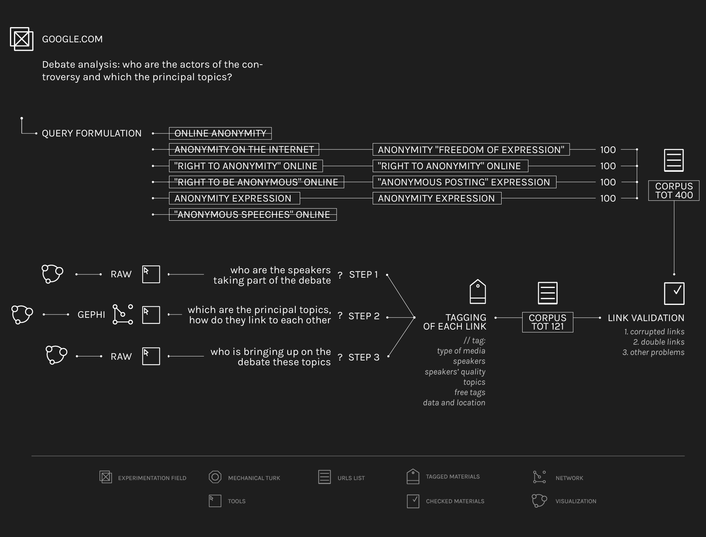

Anonymity and free speech according to Google
After a previous exploration based on more generical queries, four queries have been defined in order to explore the online anonymity issue as a right and from the point of view of the freedom of speech. The queries have been formulated in Google.com (incognito mode) and the first 100 results for each one have been scraped. Then each link have been validated: corrupted or not relevant links (such as a restaurant webpage, some facebook event pages, or the previews of some articles of a newspaper, when not pertinent with the anonymity issue) have been deleted. The remaining, together, have composed the corpus from which double links have been taken-off. Each link has been read and tagged for speaker, topic, date of publication of the article and location. The speaker in this case is the host and not the person cited inside the article and it has been tagged for its name (e.g. EFF), its "quality" (e.g. Association), and for what it is about (e.g. digital rights). The topic, instead, is what is generating the debate; it is what the speaker is talking about (e.g. Facebook, 4chan, US First Amendment) and it has been further categorized in “service”, “regulation”, “case study” or “technology”. The related visualizations aim to show the relations existing between speakers and topics.
